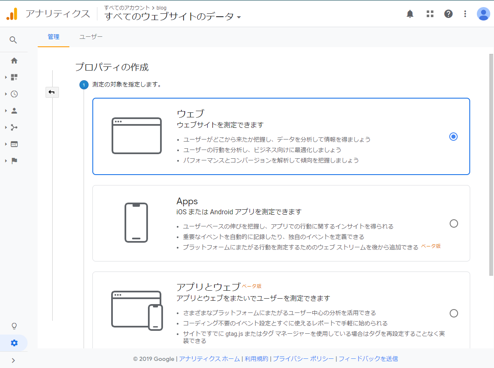
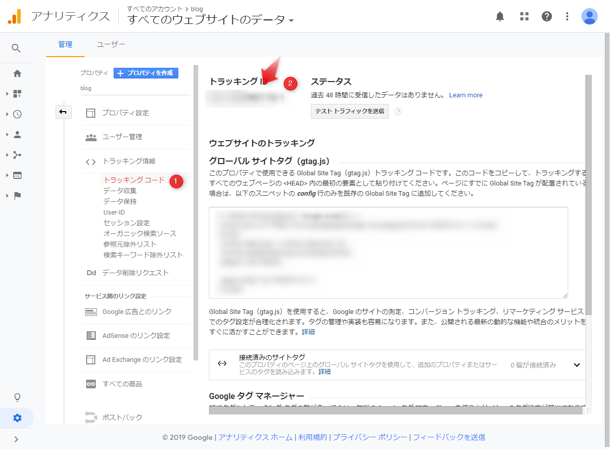

hugoにgoogleアナリティクスを導入
とりあえずgoogle analyticsが標準対応との記述を公式ドキュメントで見つけたのでやっておく。
1. google analyticsにログイン
2. 新規プロパティを作成

ハマったこと
ウェブを選択。
アプリとウェブだとうまくできなかった（よくよめよ）
3. トラッキングIDをコピー
プロパティのメニューから選ぶ

4. config.toml に追加
baseURL = "https://shibadog.github.io/"
languageCode = "ja-jp"
title = "shibadog site"
theme = "hermit"
googleAnalytics = "UA-999999999-9"
[author]
name = "shibadog"
:
: